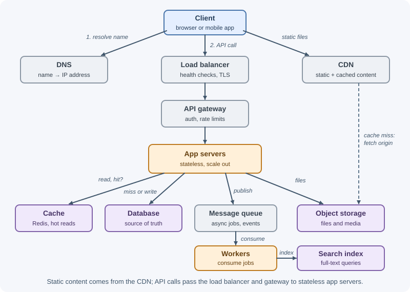
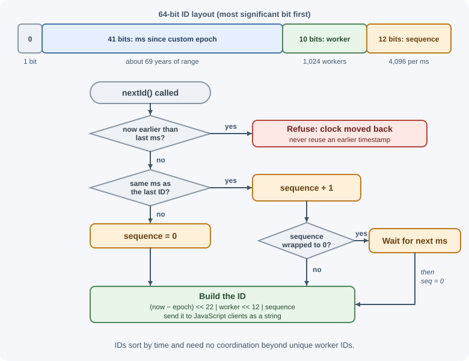
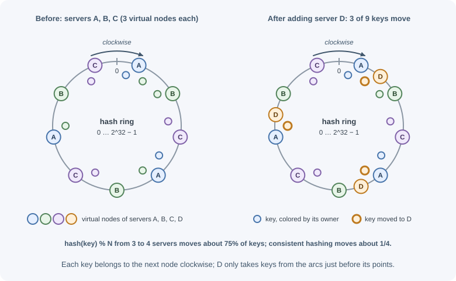

System Design Building Blocks¶
Most large systems are assembled from the same set of components: DNS, CDNs, load balancers, gateways, stateless application servers, caches, databases, object storage, queues, search indexes, rate limiters, ID generators, and partitioning schemes such as consistent hashing. Knowing what each block does, what problem it solves, and what it costs lets you assemble a design from requirements instead of from habit.
Why it matters¶
In a design discussion, every box on the diagram must earn its place. A cache added "for performance" without a read-heavy workload only adds staleness and a failure mode. A queue added "for scalability" without a slow or bursty task only adds latency. Understanding each block's purpose and trade-offs lets you justify it — or leave it out.
Real-world usage¶
- Twitter's Snowflake generated unique IDs without coordination because Twitter needed to "keep our ids under 64bits": 41 bits of time with a custom epoch (69 years), a 10-bit machine ID (up to 1,024 machines), and a 12-bit sequence that rolls over every 4,096 IDs per machine (Snowflake README).
- Amazon's Dynamo partitions data with consistent hashing and, instead of one point per node, assigns each node "multiple points in the ring" using virtual nodes (Amazon's Dynamo).
- Netflix Open Connect is Netflix's program for delivering its content efficiently: Netflix partners with over a thousand ISPs, embedding Open Connect Appliances in their networks to localize traffic — a CDN pushed as close to viewers as possible (Netflix Open Connect).
- Slack maps each channel to a stateful, in-memory Channel Server using consistent hashing; at peak, about 16 million channels are served per host (Real-time Messaging).
How it works¶
The typical request path through the blocks looks like this:

DNS¶
DNS translates names like api.example.com into IP addresses. Managed DNS
can also route users to the nearest or healthiest region (latency-based,
geolocation, weighted, and failover routing). Answers are cached for their
TTL, so changes are not instant — keep TTLs short on records you may need to
fail over. See DNS and
domains and DNS configuration.
CDN¶
A content delivery network caches content at edge locations close to users:
static assets, images, video, and cacheable public API responses. It cuts
latency, terminates TLS near the user, reduces origin load and egress cost,
and absorbs spikes. Behavior is controlled with headers such as
Cache-Control. See CDN and
HTTP and CDN caching.
Load balancer¶
A load balancer spreads requests across servers, runs health checks, and stops sending traffic to unhealthy instances.
- Layer 4 (transport): balances TCP/UDP connections by IP and port; very fast; does not inspect HTTP.
- Layer 7 (application): understands HTTP; routes by path, host, or
header, terminates TLS, adds headers like
X-Forwarded-For. - Algorithms: round robin, least connections, weighted, hash-based (for affinity).
Load balancers are themselves made redundant. See load balancing.
Reverse proxy and API gateway¶
A reverse proxy sits in front of application servers and forwards requests to them, commonly handling TLS termination, compression, static files, request buffering, caching, and basic rate limiting (Nginx, HAProxy, Envoy). A layer 7 load balancer is a reverse proxy that also balances. See reverse proxy.
An API gateway is a specialized entry point for APIs with many backend services: routing to services, token validation, per-key rate limits and quotas, request transformation, versioning, and usage analytics. Use it when several services or external developers need one consistent front door; for a single application, a load balancer plus middleware may be enough.
Stateless application servers¶
Application servers run the business logic. Keeping them stateless — no sessions or uploaded files in local memory or disk — means any instance can serve any request, so instances can be added, removed, and replaced freely. State goes to shared stores. See stateless services and autoscaling.
Cache¶
A cache keeps copies of frequently read data in fast storage (usually memory) to cut latency and database load. Use it for read-heavy data that tolerates some staleness. Key decisions: what to cache, the strategy (cache-aside, read-through, write-through), invalidation, and behavior when the cache fails. See cache fundamentals, caching strategies, and cache failure modes.
Databases: SQL and NoSQL¶
| Relational (SQL) | NoSQL (document, key-value, wide-column, graph) | |
|---|---|---|
| Data model | Tables with fixed schema and relationships | Flexible documents, key-value pairs, column families, or graphs |
| Queries | Rich SQL, joins, aggregations | Optimized for specific access patterns; joins limited |
| Transactions | Strong ACID transactions across rows and tables | Varies; many support single-item atomicity, some multi-item transactions |
| Scaling | Vertical first; read replicas; sharding is harder | Many designed for horizontal partitioning from the start |
| Good for | Related business data, payments, inventory | Huge-scale key lookups, flexible schemas, event data |
Choose from access patterns and consistency needs; many systems use both. See database fundamentals and database scaling.
Object storage¶
Object storage (Amazon S3, Google Cloud Storage, Azure Blob Storage, and S3-compatible services) stores large binary objects — images, video, backups, exports — durably and cheaply, addressed by bucket and key. Keep the bytes there and metadata in a database; deliver through a CDN and use presigned URLs for direct uploads and private downloads. See file storage and uploads.
Message queue¶
A message queue (or log) decouples producers from consumers: the producer writes a message and continues; consumers process it at their own pace. Use it for slow or unreliable work, to absorb bursts, to fan events out to several consumers, and to connect services loosely (RabbitMQ, Kafka, Amazon SQS/SNS). Design for at-least-once delivery with idempotent consumers. See messaging fundamentals and delivery guarantees.
Search index¶
Databases are poor at full-text search with typo tolerance and relevance ranking. A search engine builds an inverted index: a map from each term to the documents containing it.
Documents: 1: "fresh coffee beans" 2: "coffee shop downtown" 3: "fresh bread"
Inverted index:
beans → [1] bread → [3] coffee → [1, 2]
fresh → [1, 3] downtown → [2] shop → [2]
Query "fresh coffee" → score [1, 3] and [1, 2] → document 1 ranks first
Analyzers tokenize and normalize text (lowercase, stemming); results are ranked by relevance (for example, BM25). Elasticsearch and OpenSearch are common choices. The database stays the source of truth; the index is updated asynchronously, so search can lag slightly behind writes.
Rate limiter¶
A rate limiter caps how many requests a client can make in a time window, protecting against abuse, brute force, and overload. It usually sits at the API gateway or in middleware, with counters in a shared store such as Redis. See rate limiting and throttling and the distributed rate limiter case study.
Unique ID generation¶
Distributed systems need IDs that are unique across many servers, without a single database sequence becoming a bottleneck.
| Approach | Size | Sortable by time | Coordination | Notes |
|---|---|---|---|---|
| Database auto-increment | 64-bit | Yes | Single sequence (bottleneck, SPOF) | Simple; reveals counts; hard across shards |
| UUID v4 | 128-bit | No | None | 122 random bits; random inserts fragment B-tree indexes |
| UUID v7 | 128-bit | Yes (millisecond) | None | Unix-time prefix + random bits (RFC 9562); index-friendly |
| Snowflake-style | 64-bit | Yes (roughly) | Unique worker IDs | Compact; fits in a BIGINT |
| ID ranges from a service | 64-bit | Roughly | Allocate blocks (e.g. 1,000 at a time) | Simple; used for counters like URL codes |
Snowflake-style IDs (introduced at Twitter) pack a timestamp, a machine ID, and a sequence number into 64 bits:

They sort by creation time and are generated locally once each machine has a unique ID. Watch for the clock moving backwards (refuse or wait) and for sequence exhaustion within one millisecond (wait for the next). Time-ordered IDs keep index inserts near the end of the index, but they reveal creation time — never rely on IDs being unguessable for access control.
Consistent hashing¶
To spread keys across N cache or database nodes, the naive approach is
node = hash(key) % N. When N changes, most keys map to a different node
(going from N to N + 1 nodes moves about N/(N + 1) of them — 75% for 3 → 4)
— a massive reshuffle that empties caches and moves most data.
Consistent hashing places both nodes and keys on a hash ring (for example, 0 to 2^32 − 1). A key belongs to the first node found moving clockwise from the key's position.

On average, adding or removing a node moves only about 1/N of the keys.
Virtual nodes fix two problems with one point per node: uneven distribution (some nodes get large arcs) and heterogeneous capacity. Each physical node is placed at many points (for example, 100–200). Load evens out, a removed node's keys spread across many nodes instead of one neighbor, and bigger machines can be given more virtual nodes.
Consistent hashing is used in distributed caches, Dynamo-style key-value stores, Cassandra, and load balancers that need affinity. Redis Cluster uses a related idea: 16,384 fixed hash slots assigned to nodes. See database scaling.
When to use and when not to use¶
Use a block when its problem is real: a CDN when many users fetch the same content; a cache when reads dominate and staleness is acceptable; a queue when work is slow, bursty, or unreliable; a search index when users need full-text search; sharding or consistent hashing when one node cannot hold the data or load.
Leave it out when: the load fits on simpler infrastructure (one database
with replicas handles a lot); the data must always be fresh (no cache); the
caller needs the result immediately (no queue); simple LIKE or prefix
queries are enough (no search cluster yet); you have no operational capacity
to run it.
| Choice | Prefer the first when… | Prefer the second when… |
|---|---|---|
| Queue vs direct call | The caller does not need the result now; work is slow, bursty, or retried; several consumers react | The caller needs the answer to respond; latency matters; the work is fast and reliable |
| SQL vs NoSQL | Related data, transactions, ad hoc queries, moderate scale | Simple key-based access at very large scale, flexible schema, horizontal partitioning from day one |
| CDN vs origin only | Static or media content, global users, cacheable public responses | Personalized or private responses that cannot be cached, a single-region internal tool |
| Cache vs no cache | High read:write ratio, tolerable staleness, measured database pressure | Data must be exactly current, low traffic, or poor hit rate expected |
| API gateway vs load balancer only | Many services or external developers, per-key quotas | One application with its own auth middleware |
| Snowflake/UUID v7 vs auto-increment | Many writers across shards or regions | One database, simplicity matters, IDs not exposed |
Practical examples¶
A Snowflake-style ID generator¶
// 41-bit timestamp | 10-bit worker ID | 12-bit sequence, as a BigInt
const EPOCH = 1735689600000n; // 2025-01-01T00:00:00Z, a custom epoch
export function createIdGenerator(workerId) {
let lastMs = -1n;
let sequence = 0n;
return function nextId() {
let now = BigInt(Date.now());
if (now < lastMs) throw new Error("Clock moved backwards; refusing to generate IDs");
if (now === lastMs) {
sequence = (sequence + 1n) & 4095n; // 12 bits
if (sequence === 0n) {
// Sequence exhausted for this millisecond: wait for the next one
while (now <= lastMs) now = BigInt(Date.now());
}
} else {
sequence = 0n;
}
lastMs = now;
return ((now - EPOCH) << 22n) | (BigInt(workerId) << 12n) | sequence;
};
}
const nextId = createIdGenerator(7); // workerId must be unique, 0–1023
console.log(nextId().toString()); // a large integer, printed as a string
Send such IDs to JavaScript clients as strings — they exceed
Number.MAX_SAFE_INTEGER (2^53 − 1), so as JSON numbers many of them lose
precision and change value.
A consistent hash ring with virtual nodes¶
import { createHash } from "node:crypto";
const hash32 = (value) => createHash("md5").update(value).digest().readUInt32BE(0);
// Place each physical node at many virtual positions, sorted around the ring
export function buildRing(nodes, virtualNodes = 150) {
return nodes
.flatMap((node) =>
Array.from({ length: virtualNodes }, (_, i) => ({ position: hash32(`${node}#${i}`), node }))
)
.sort((a, b) => a.position - b.position);
}
// A key belongs to the first virtual node clockwise (use binary search at scale)
export function getNode(ring, key) {
const position = hash32(key);
return (ring.find((entry) => entry.position >= position) ?? ring[0]).node;
}
const ring = buildRing(["cache-a", "cache-b", "cache-c"]);
console.log(getNode(ring, "user:42")); // "cache-a" (MD5 is deterministic, so always the same node)
Best practices¶
- Add a block only when a requirement or estimate justifies it.
- Keep application servers stateless; put state in shared, replicated stores.
- Remove single points of failure: redundancy across availability zones.
- Put a CDN in front of static and media content.
- Treat caches and search indexes as derived data, not the source of truth.
- Use queues for slow, unreliable, or bursty work; make consumers idempotent.
- Prefer time-ordered IDs (UUID v7, Snowflake-style) for keys at scale.
- Use consistent hashing (with virtual nodes) or hash slots when nodes change.
In production¶
- Cache stampede. Symptom: database CPU spikes after a deploy or at regular intervals. Detect: cache hit rate drops while database load jumps. Cause: a cold cache or many keys expiring at once. Fix: jittered TTLs, request coalescing, and cache warm-up (see cache failure modes).
- Hot shard. Symptom: one database or cache node is saturated while others idle. Detect: per-node CPU and request metrics. Cause: a skewed key (a celebrity, a viral item, a timestamp shard key). Fix: a better partition key, splitting hot keys, local caching, more virtual nodes.
- Queue backlog. Symptom: jobs finish later and later. Detect: queue depth and age-of-oldest-message alarms. Cause: consumers slower than producers, or a poison message retried forever. Fix: scale consumers, cap retries, send failures to a dead-letter queue.
- Slow DNS failover. Symptom: traffic keeps reaching a failed region for many minutes. Detect: synthetic checks per region. Cause: long DNS TTLs and clients caching answers. Fix: shorter TTLs on failover records, health-checked routing, and load balancer–level failover.
- Health checks that lie. Symptom: errors from instances the load balancer still considers healthy — or all instances removed at once. Detect: 5xx rates at the load balancer versus instance health. Cause: a check that ignores the app's real state, or one that fails when a shared dependency blips. Fix: separate liveness and readiness checks.
- ID generator clock problems. Symptom: ID generation errors or duplicate-key failures. Detect: error logs from the generator. Cause: the clock stepped backwards, or two workers share an ID. Fix: time sync that slews rather than steps, refusing to issue IDs while the clock is behind, and enforced unique worker IDs.
Important terminology¶
- Layer 4 / layer 7 load balancing: balancing by connection (IP, port) / by HTTP content (path, host, headers).
- Stateless service: a service that keeps no client state locally.
- Inverted index: a map from terms to the documents that contain them.
- Snowflake ID: a 64-bit, time-ordered ID combining timestamp, machine ID, and sequence.
- UUID v4 / v7: random / time-ordered 128-bit unique identifiers.
- Consistent hashing: partitioning where adding or removing a node moves only a small share of keys.
- Virtual node: one of many ring positions assigned to a physical node.
- Hash slot: one of a fixed number of key partitions assigned to nodes.
Common mistakes and misconceptions¶
- Adding every block to every design. Each adds cost, latency, and failure modes.
- Storing sessions or files on app servers, blocking horizontal scaling.
- Using
hash(key) % Nfor nodes that change, causing massive reshuffles. - Random UUID v4 primary keys on huge tables without considering index fragmentation.
- Sending 64-bit IDs as JSON numbers to JavaScript clients.
- Forgetting that load balancers and gateways need redundancy too.
- "NoSQL scales, SQL doesn't." Both scale with the right design; choose by access patterns and consistency needs.
Revision questions¶
- What is the difference between a load balancer, a reverse proxy, and an API gateway?
- Why should application servers be stateless?
- How does an inverted index answer a full-text query?
- Compare auto-increment IDs, UUID v4, UUID v7, and Snowflake-style IDs.
- Why does
hash(key) % Ncause problems when N changes, and how does consistent hashing fix it? - What two problems do virtual nodes solve?
Further learning¶
- Amazon Dynamo paper (2007)
- RFC 9562: Universally Unique IDentifiers (UUIDs)
- Redis Cluster specification: hash slots
- AWS: Elastic Load Balancing documentation
- Azure Architecture Center: API gateways
- OpenSearch documentation
- Related notes: The system design process, Back-of-the-envelope estimation, System design overview